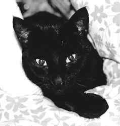
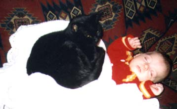

Matthew was given Arry by Rob and Sue, in 1989. They got her from a farm in the New Forest. Arry was very stupid, but we forgave her this as she was good at catching mice. She died in October 1998 after a short illness. We were very upset - our affection for her was not proportional to her mental powers. The week before she died she was seen torturing a shrew in the garden - a skill she obviously never lost.
Arry the Cat was black all over and walked with bow-legs. She was tiny and fierce. She was easily fooled into thinking that almost anything was alive, and would stalk or hide from any such object for hours.
When she was very small she got up the chimney and had to be dragged down by the hind legs. She did not enjoy this much and neither did we. As she was so stupid there are few other amusing things she ever did.

Arry babysitting, 1996